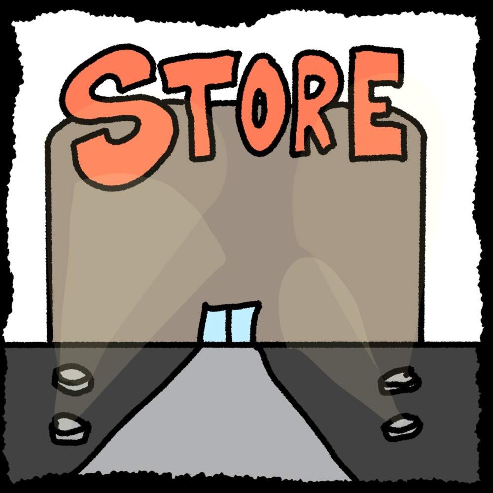

I made a short story game where you play from the perspective of a child and it's your birthday. Make decisions on what to do with the gift you recieved from your mother.
This project was fun to make as a person just getting into coding in html. I took a decent amount of my time thinking about what I wanted to make. If I thought of my idea quicker, I feel like I could've developed the game more. But I enjoyed making it and drawing the art. It was inspired by other nonlinear web games I played in my youth, ones that I couldn't even make a guess at their names, but I enjoyed playing with the company of my siblings.